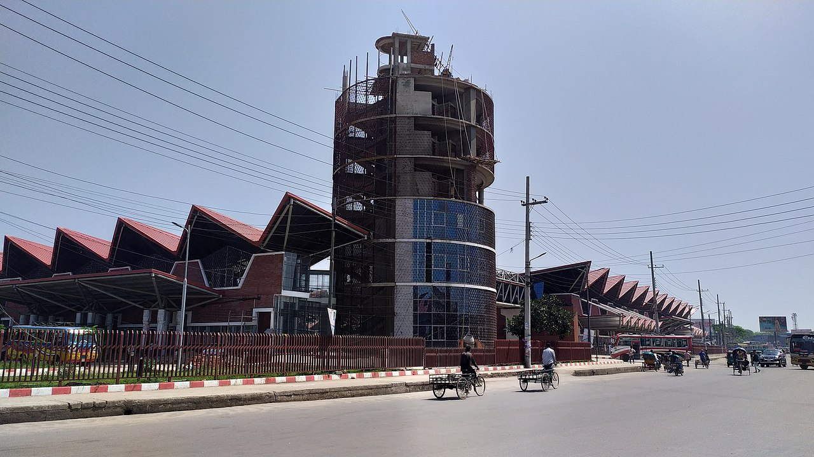

Read More
01. Sreemangal Tourist Spot
Sreemangal is known as the tea capital of Bangladesh. Sreemangal’s tea gardens can be seen for miles and miles. The town is surrounded by more than 40 tea gardens, lakes, lofty hills, dense jungles, lemon and pineapple gardens and rubber gardens. Sreemangal’s lush greenery and beautiful trees promise to create a unique impression on all visitors. The impressive green shade of the majestic trees, coupled with the azure sky, is truly breathtaking.Sreemangal’s highlights include the Tea Gardens, Lawachara National Park, Madhabkunda Waterfall, Madhabpur Lake, and Sitesh Babur Zoo, among others
02. Sylhet City
Sylhet tour is now easier than ever with the guides provided on this website. Beautiful Sylhet City is located in north- eastern Bangladesh on the bank of River Surma.Travellers can easily reach Sylhet by Air, Train or Bus, departing daily several times from and to Dhaka, as well as Chittagong.We provide tourist information to help one plan their perfect vacation in Sylhet, from maps/directions to recommending delicious restaurants and finding one perfect accommodations in Sylhet.
03. Jaflong
Jaflong, located between tea gardens and hills, is the tourist hotspot of Sylhet, a hill station, positioned on the border between Bangladesh and Meghalaya, the north-eastern state of India. Also home to the Khasi tribe, Jaflong is famed for its lush, tropical setting and the areas of natural beauty surrounding it.These areas include the Piyain River, which flows between Bangladesh and India and is renowned for its crystal clear water that allows visitors to vividly see the array of underwater stones. In Jaflong, visitors can also take in the cascading waterfalls and rich greenery of the mountains of Meghalaya, and visit the historic Dawki Bridge, a suspension bridge built by the British in 1932 and a road border crossing between Bangladesh and India.
04. Bisnakandi
Bisnakandi, conveniently situated near Sylhet on the India-Bangladesh, is a combination of green hills, clouds, a variety of stones and crystal-clear waters flowing from the north-eastern Meghalaya Mountains. Visitors can lie down on the rocks and relax or go for a peaceful swim.
05. Bholaganj SadaPathor
With strikingly similar views to famed hill station Jaflong, Bholaganj SadaPathor, located in the Companiganj Upazila and near East Khasi Hills district of Meghalaya, India, is famous for beautiful stones, crystal clear water and green mountains. In this “heaven of white stones,” visitors can enjoy swimming, floating or simply soaking their feet in the beautiful cool water. Two other must-see places near Bholaganj include Utma Sora and Turong Sora.
06. Khadimnagar National Park
Located around 5 km from Hazrat Shah Paran Mazar gate and 13 km away from Sylhet City, on the Sylhet-Jaflong Highway, Khadimnagar National Park (KNP) comprises 1,673 acres of rolling hills and natural forest in an area surrounded by famed tea gardens.